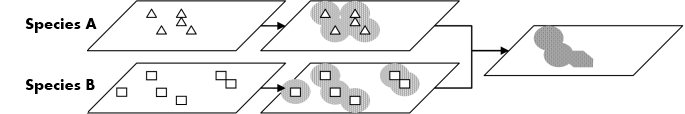

Taxonomic footprints, as applied to georeferencing, describe areas of occurrence
(or co-occurrence for multiple species) that when visualized can be used to inform how well the results of georeferencing fit within the knowledge of existing point occurrence data.

Funding provided by the U.S. National Science Foundation as part of the